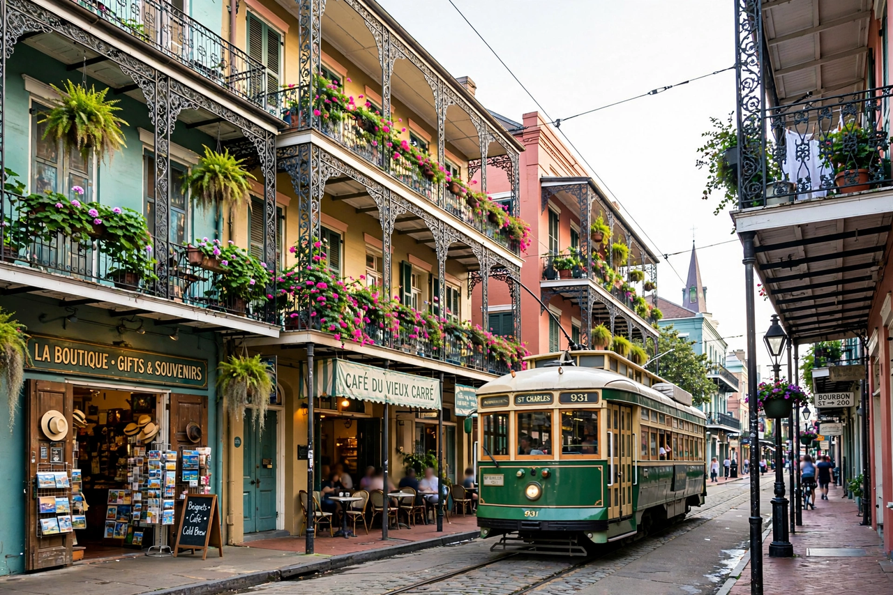

| Louisiana | |
|---|---|
 | |
| Capital | Baton Rouge |
| Largest city | New Orleans |
| Admission to Union | April 30, 1812 (18th state) |
| Governor | Jeff Landry (R) |
| Area | 135,659 km² (52,378 sq mi) |
| Population (2020) | 4,657,022 |
| Nickname | Pelican State; Bayou State |
Louisiana is a state in the Deep South and South Central regions of the United States. It is bordered by Arkansas to the north, Mississippi to the east, the Gulf of Mexico to the south, and Texas to the west. Its capital is Baton Rouge and its most populous city is New Orleans, famous for its French colonial heritage, Creole and Cajun cultures, and as the birthplace of jazz.
France claimed the region in 1682 and named it La Louisiane for King Louis XIV. Ceded to Spain in 1762, returned to France in 1800, it was sold to the United States in the Louisiana Purchase of 1803, doubling the nation's size. Louisiana entered the Union in 1812. It seceded during the Civil War, and its port and river systems made it a major theatre of the conflict. In the 20th century the discovery of oil and gas transformed its economy; in 2005 Hurricane Katrina devastated New Orleans and the Gulf Coast, causing catastrophic flooding and more than a thousand deaths in the state.
The state is dominated by the Mississippi River delta and its vast coastal wetlands and bayous — some of the most productive fisheries in North America, but also eroding rapidly through subsidence, sea-level rise and channelisation of the river. Louisiana has a humid subtropical climate, hot summers, and frequent exposure to tropical storms.
Louisiana is the only U.S. state whose legal system is partly based on the Napoleonic civil-law code rather than English common law, a legacy of its French and Spanish past. It is divided into parishes instead of counties. French-speaking Cajun and Creole communities sustain distinctive cuisines — gumbo, jambalaya, crawfish étouffée — and musics, from jazz and blues to zydeco. Mardi Gras in New Orleans is among the largest carnival celebrations in the world.